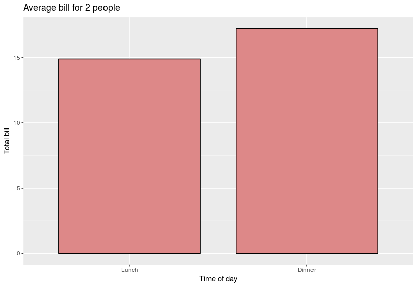
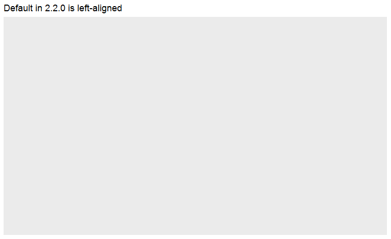

Center Plot title in ggplot2
This simple code (and all my scripts from this morning) has started giving me an off center title in ggplot2:
Ubuntu version: 16.04 R studio version: Version 0.99.896 R version: 3.3.2 GGPLOT2 version: 2.2.0
I have freshly installed the above this morning to try and fix this...
dat <- data.frame( time = factor(c("Lunch","Dinner"), levels=c("Lunch","Dinner")), total_bill = c(14.89, 17.23) ) # Add title, narrower bars, fill color, and change axis labels ggplot(data=dat, aes(x=time, y=total_bill, fill=time)) + geom_bar(colour="black", fill="#DD8888", width=.8, stat="identity") + guides(fill=FALSE) + xlab("Time of day") + ylab("Total bill") + ggtitle("Average bill for 2 people")

Answer
From the release news of ggplot 2.2.0: "The main plot title is now left-
aligned to better work better with a subtitle". See also the plot.title
argument in ?theme: "left-aligned by default".
As pointed out by @J_F, you may add theme(plot.title = element_text(hjust =
0.5)) to center the title.
ggplot() +
ggtitle("Default in 2.2.0 is left-aligned")

ggplot() +
ggtitle("Use theme(plot.title = element_text(hjust = 0.5)) to center") +
theme(plot.title = element_text(hjust = 0.5))